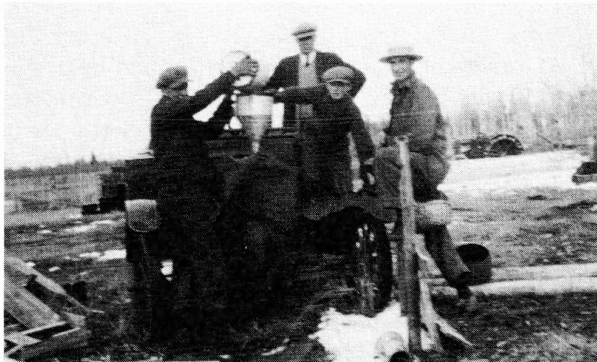

large threshing crew was no longer needed.
Henri had the first car in Delmas. It was a McClaughland or Maxwell and had been purchased from Moise L'Heureux. Alma's father sold it because he had several boys and the car created friction among them; instead, Moise bought each lad a horse and sold the car. It is interesting to note that some years later Henri did not purchase a license for his car for the same reason.
One day Henri began to seriously consider a move for the family. He had heard about land that was available in the bush country close to Hudson Bay Junction. Although he was considering another sawmill, his main concern was for his boys as the older ones were now eighteen and nineteen years of age. So, in November of 1927, Henri went to see the White Poplar Settlement, a few miles west of the Junction. It was bush country covered with a second growth
– probably the result of a forest fire in the early years. There were many willow, fir, birch, tamarack, spruce and bluffs of white poplar in this northerly district.
On this, Henri's first visit, the area boasted a railroad siding where Louis Veillard's sawmill was located. There was also a store owned and operated by Louis and his wife. There was a school. It had the same name as the settlement: White Poplar. The school had opened some years earlier.
The next month Henri, accompanied by his sons, Smokey and Louis, and another resident from Delmas, Louis Strasser, went to the Land Office in Prince Albert where Smokey applied for his homestead patent. Then, early in the new year, Henri and Strasser went back to the White Poplar area. This time they built a shack on a knoll of land belonging now to Smokey. The shack would be for the boys. On January 24, 1928, Henri applied for his homestead, the Southeast Quarter of Section 20, Township 45, Range 4, West of the 2nd Meridian. Henri also purchased some land from Angus Pulchenski, the Southeast Quarter of Section 9.
It was here that Louis helped his dad build a house for the family. There was already a large barn and a few shacks on the place for Angus had homesteaded here some ten years earlier. The granaries served as living quarters while Henri and his son worked. They began building while it was still winter so when the family arrived in April, the house was ready.
When the time came to move, Louis travelled by freight with six head of horses, the sleigh, cutter, feed and some of the furniture. The journey took three days; the first night the freight stopped at Humboldt, the second was spent at Melfort.
However, when White Poplar Siding was reached, the conductor informed them that they would need to continue on to Hudson Bay as they were running short of coal and couldn't risk stopping. Louis arrived at Hudson Bay at 11:30 that night.
In the meantime, Henri was waiting at the Siding for he had travelled down on the passenger train and so had arrived earlier. Undeterred, he simply walked the six miles to the Junction and found Louis who had bedded down at Marcotte's Hotel. As it was sometime after midnight when Henri arrived, they waited until morning to unload their belongings, then started for home. It was Sunday. That night they, along with Charlie Paradis, slept in Louis Veillard's bunkhouse. They did not put in a good night and in the morning they discovered why. They had picked up body lice. This meant they needed to wash their underwear and bedding in boiling water.

The move was not an easy one for Alma. It meant leaving her large home in Delmas equipped with many conveniences. As well, she found the hundreds of miles an obstacle separating her from her sisters. Arriving at their new home set in bush country, Alma was convinced that this new land of Henri's was fit only for the Indians and the mosquitos.
Soon after Alma became ill. Her recovery was slow and took several months. Whether it was due to her illness or a lack of interest in the new land, Alma's presence was not generally known to the community at large. In time the ladies of